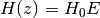

FlatwCDM¶
-
class
astropy.cosmology.FlatwCDM(H0, Om0, w0=-1.0, Tcmb0=2.725, Neff=3.04, m_nu=<Quantity 0.0 eV>, Ob0=None, name=None) [edit on github][source]¶ Bases:
astropy.cosmology.wCDMFLRW cosmology with a constant dark energy equation of state and no spatial curvature.
This has one additional attribute beyond those of FLRW.
Parameters: H0 : float or
QuantityHubble constant at z = 0. If a float, must be in [km/sec/Mpc]
Om0 : float
Omega matter: density of non-relativistic matter in units of the critical density at z=0.
w0 : float, optional
Dark energy equation of state at all redshifts. This is pressure/density for dark energy in units where c=1. A cosmological constant has w0=-1.0.
Tcmb0 : float or scalar
Quantity, optionalTemperature of the CMB z=0. If a float, must be in [K]. Default: 2.725 [K]. Setting this to zero will turn off both photons and neutrinos (even massive ones).
Neff : float, optional
Effective number of Neutrino species. Default 3.04.
m_nu :
Quantity, optionalMass of each neutrino species. If this is a scalar Quantity, then all neutrino species are assumed to have that mass. Otherwise, the mass of each species. The actual number of neutrino species (and hence the number of elements of m_nu if it is not scalar) must be the floor of Neff. Typically this means you should provide three neutrino masses unless you are considering something like a sterile neutrino.
Ob0 : float or None, optional
Omega baryons: density of baryonic matter in units of the critical density at z=0. If this is set to None (the default), any computation that requires its value will raise an exception.
name : str, optional
Name for this cosmological object.
Examples
>>> from astropy.cosmology import FlatwCDM >>> cosmo = FlatwCDM(H0=70, Om0=0.3, w0=-0.9)
The comoving distance in Mpc at redshift z:
>>> z = 0.5 >>> dc = cosmo.comoving_distance(z)
Methods Summary
efunc(z)Function used to calculate H(z), the Hubble parameter. inv_efunc(z)Function used to calculate  .
.Methods Documentation
-
efunc(z) [edit on github][source]¶ Function used to calculate H(z), the Hubble parameter.
Parameters: z : array-like
Input redshifts.
Returns: E : ndarray, or float if input scalar
The redshift scaling of the Hubble constant.
Notes
The return value, E, is defined such that .
-
inv_efunc(z) [edit on github][source]¶ Function used to calculate
.Parameters: z : array-like
Input redshifts.
Returns: E : ndarray, or float if input scalar
The inverse redshift scaling of the Hubble constant.
Notes
The return value, E, is defined such that
 .
.
-